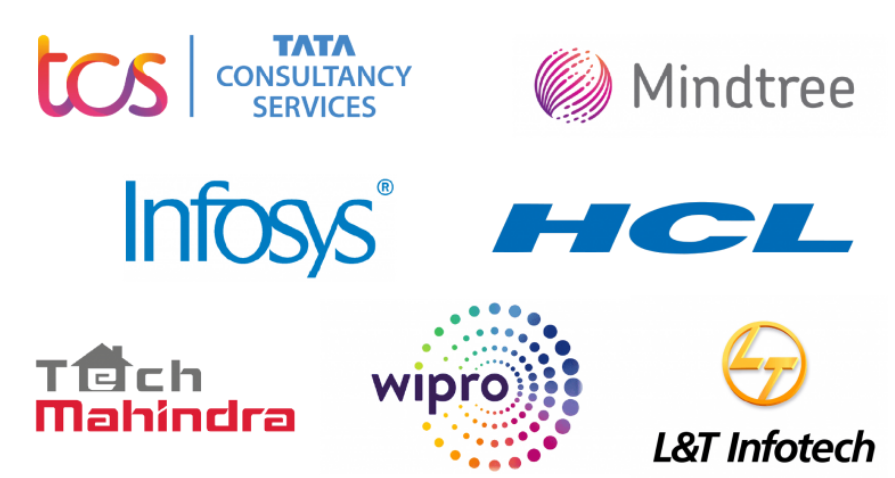

TOP PRODUCT BASED COMPANIES IN INDIA
Harsh Raj Gupta | 30th October, 2022

Top Service-based Companies in India
Here is a list of 25 top service-based business examples across India known for their top-notch quality and customer satisfaction.
1. Accenture
Accenture, a professional service provider in Ireland, is one of the world's leading service-based companies globally, offering its customers a broad range of services.
Accenture has confirmed its place for 18 consecutive years in the Forbes Global 2000 list and 20 consecutive years on the FORTUNE global 500 list. It has also been recognized among Ethisphere world's most ethical companies and has been placed in Wall Street Journal Management Top 250 for five consecutive years now.
Pursuing an IT Service Management course can be crucial to landing a developer position here.
Accenture has eleven offices across India in Bengaluru, Chennai, Gurugram, Kolkata, Hyderabad, Noida, Mumbai, New Delhi, and Pune.
2. Infosys
Infosys is a multinational service provider based in India specializing in outsourcing services, digital services, business consulting, and information technology.
It has been recognized as one of the Ethisphere world's ethical companies for two consecutive years and received Brandon Hall group's Organizational Excellence Certification.
The company has around 39 offices in India, with Mysore, Pune, Thiruvananthapuram, Pune, Kolkata, Hyderabad, Mumbai, Noida, Bengaluru, Gurugram, Chennai, Chandigarh, Mangalore, Bhubaneswar, Jaipur, Nagpur, and Delhi.
3. IBM
International Business Machines Corporation, famously known as IBM, is one of the biggest IT companies in the world. The company, headquartered in Armonk, New York, United States, was founded in 1911 in the United States by Charles Ranlett Flint, a financial capitalist.
It has five significant sectors generating its revenue: Global Business Services, Global Technology Services, Cloud and Cognitive Software, Systems, and Global Financing.
Pursuing a recognized cloud computing course will enhance your career graph, thus increasing your chances of getting recruited by the top cloud computing firms like IBM.
IBM has offices in India in the following cities - Bhubaneshwar, Chennai, Coimbatore, Noida, Pune, Visakhapatnam, Ahmedabad, Bengaluru, Delhi, Gurgaon, Hyderabad, Kochi, Kolkata, and Mumbai.
4. Tata Consultancy Services (TCS)
TCS is a subsidiary of the TATA group, which JRD started. One of the world's biggest firms providing top-notch IT services, TCS was founded in 1968 and is headquartered in Mumbai.
It offers engineering and industrial services, automation and AI, cloud infrastructure, and many more to various clients. Rajesh Gopinathan is the company's current CEO and managing director.
TCS has been recognized as a Global Top Employer for seven consecutive years by Top Employers Institute. It has multiple offices across India in the following cities - Ahmedabad, Coimbatore, Delhi, Kochi, Thiruvananthapuram, Chennai, Kolkata, Pune, Banglore, Hyderabad, Gurugram, Noida, and many more.
5. Deloitte
Deloitte, officially known as Deloitte Touche Tohmatsu Limited (DTTL), is a multinational company that provides its services in finance, risk advisory, audit, and tax advisory to leading clients worldwide. The company was founded by William Welch Deloitte in 1845 in the United Kingdom with its headquarters in London and is one of the big four accounting organizations.
Deloitte was named one of the top 5 global brands by Brand Finance Global 500 in 2020. Punit Renjen is currently the CEO of the company.
Deloitte has offices in 10 cities in India, namely Kochi, Goa, Kolkata, Ahmedabad, Bangalore, Chennai, Gurugram, Hyderabad, Mumbai, and Pune.
6. Wipro
Wipro Limited is one of the leading service providers for information technology, consulting, and business process consulting. It was founded in 1945 by M.H. Hasham Premji and is headquartered in Bengaluru, with Thierry Delaporte as the current CEO.
The company has been recognized in the top 'leadership' category in governance practices by various institutions such as International Financial Corporation, the Bombay Stock Exchange, and Institutional investor advisory services.
Bangalore, Guwahati, Chennai, Mysore, Bhubaneswar, Kolkata, Jaipur, Noida, Gurgaon, Delhi, Vijayawada, Visakhapatnam, Secunderabad, Hyderabad, Kochi, Baroda, Gujarat, Ahmedabad, Mumbai, and Pune are the cities where Wipro offices are located in India.
7. LTI
Larsen and Toubro Infotech is a global company specializing in digital solutions and technology consulting. Founded and headquartered in Bombay in 1938 by two Danish engineers, Henning Holck-Larsen and Soren Kristian Toubro, the current Chief Executive Officer of LTI is Sanjay Jalona. The company's offices in India are in Delhi, Kolkata, Pune, Hyderabad, Nagpur, Chandigarh, Bangalore, and Chennai.
8. Capgemini
Headquartered in Paris, France, Capgemini offers its services in consulting and technology services. In 1967, Serge Kampf founded the company and transformed it into a global IT firm.
Capgemini won two Pega Partner Excellence Awards in 2020 and three Brandon Hall Group Excellence in Technology Awards in 2021. The company has branches in 12 cities in India, including Bhubaneswar, Noida, Bengaluru, Kolkata, Gurugram, Chandigarh, Pune, Mumbai, and Chennai.
9. HCL
HCL is one of the leading service providers in information technology and consulting, headquartered in Noida. It was founded in 1991 by industrialists Shiv Nadar and Arjun Malhotra under the parent organization HCL Enterprise, and the current CEO is C Vijayakumar.
HCL has offices in Chennai, Bangalore, Noida, Hyderabad, Pune, Lucknow, Vadodara, Gurgaon, Mumbai, Kolkata, and Jaipur.
10. Tech Mahindra
Headquartered in Pune, Business conglomerate Anand Mahindra founded tech Mahindra in 1986. The present CEO is C. P. Gurnani.
The company has acquired many achievements, including the 2021 golden peacock award for HR excellence in the IT sector. It was also listed among the best companies to work for in India in 2020.
Tech Mahindra has offices in Bhubaneswar, Chandigarh, Chennai, Bangalore, Gurgaon, Hyderabad, Kolkata, etc.